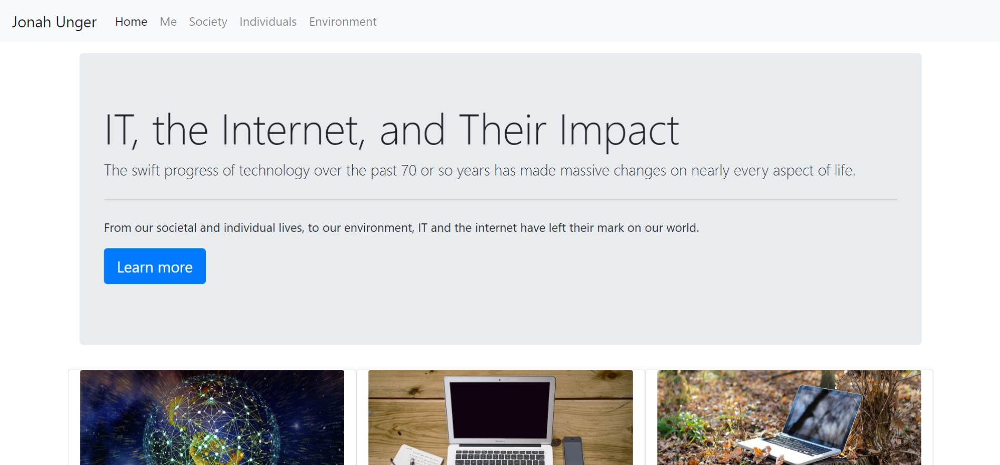

Bones of the Hand
Charcoal. By Jonah Unger

Self Portrait
Charcoal. By Jonah Unger
Self Portrait
Adobe Illustrator. By Jonah Unger
 A website, built in conjuction with my peers Benjamin Ord and Thomas Kristich, for a small local orchard. This website was built using Wordpress.
A website, built in conjuction with my peers Benjamin Ord and Thomas Kristich, for a small local orchard. This website was built using Wordpress.This site was built in a previous course, and discusses the impact of IT on both society and on inviduals, from the perspective of both myself, of Generation Z, and of someone who was raised without advanced technologies.